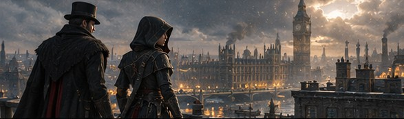

Protagonista
Jacob Frye
Impulsivo y carismático, prefiere la acción directa y lidera una banda callejera.
La Revolución industrial ha transformado Londres en una ciudad de fábricas, desigualdad y poder corporativo. Los gemelos Jacob y Evie Frye llegan para desafiar el dominio templario y devolver los barrios a sus habitantes.
La Revolución industrial ha transformado Londres en una ciudad de fábricas, desigualdad y poder corporativo. Los gemelos Jacob y Evie Frye llegan para desafiar el dominio templario y devolver los barrios a sus habitantes.
Este dossier reúne los personajes, el contexto histórico, los lugares y las actividades que definen esta entrega. La información está organizada para descubrir el juego sin perderse entre sus distintas capas.
Las figuras que dan forma a la historia de Assassin’s Creed Syndicate.

Impulsivo y carismático, prefiere la acción directa y lidera una banda callejera.
Metódica y sigilosa, se centra en los artefactos y la estrategia de la Hermandad.
Asesino de Londres que ayuda a los gemelos a organizar la resistencia.
Magnate templario que controla sectores clave de la ciudad.
Londres · 1868 · Una recreación histórica que combina acontecimientos reales y ficción.
Los gemelos Frye se enfrentan a Starrick y sus aliados mientras liberan distritos de Londres. Sus estilos diferentes permiten abordar el conflicto desde la fuerza o desde el sigilo.
Regiones, ciudades y escenarios que dan personalidad a esta aventura.
Barrio obrero donde comienza la lucha por el control de Londres.
Centro político y monumental de la capital.
Zona financiera y comercial.
El río y sus muelles forman parte del transporte y las misiones.
Los sistemas principales que definen la forma de jugar esta entrega.
Cambiar entre Jacob y Evie según el estilo de misión.
Subir rápidamente a tejados y cruzar calles.
Conducir, perseguir y combatir desde vehículos.
Reclutar aliados y disputar barrios a los Blighters.
Habilidades orientadas a infiltración y ocultación.
Enfrentamientos cuerpo a cuerpo rápidos y contundentes.
Qué hacemos durante la aventura, cómo exploramos el mundo y qué sistemas conviene dominar.
Liberar distritos mediante actividades, rescatar niños trabajadores, sabotear instalaciones, perseguir objetivos, completar cacerías templarias y utilizar la red de los Rooks para debilitar el control enemigo.
Detalles y sistemas especiales que merece la pena descubrir durante la exploración.
Los recuerdos de Charles Dickens y otros personajes históricos amplían el Londres de la época.
Los coleccionables y secretos de la ciudad revelan historias de sus barrios.
El cambio entre Jacob y Evie permite afrontar actividades con habilidades distintas.
ARCHIVO EN AMPLIACIÓN · Se añadirán ubicaciones concretas y capturas propias a medida que se complete la documentación de cada juego.
Consolidó la exploración urbana victoriana e introdujo dos protagonistas jugables con estilos complementarios.